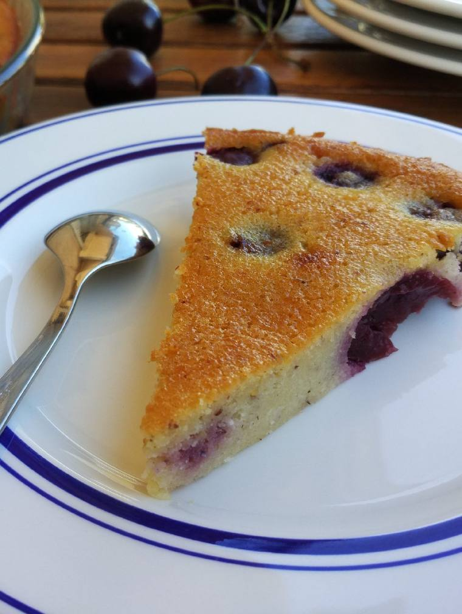

Desserts

Desserts
Clafoutis aux cerises
Préparation : 20 min
Cuisson : 40 min
Ingrédients (pour 8 parts)
- 600 g de cerises
- 3 œufs
- 100 g de sucre
- 1 sachet de sucre vanillé
- 120 g de farine
- 100 g d’amandes en poudre
- 250 g de lait entier
- 100 g de crème entière liquide
- 30 g de beurre
- 10 g de kirsch (facultatif)
- 1 pincée de sel
- beurre et sucre roux pour finir
Quantités adaptées. Les temps de cuisson ne sont pas recalculés.
- Préchauffer le four à 200 °C, faire fondre le beurre et le laisser tiédir.
- Fouetter œufs, sucres et sel, ajouter farine et amandes.
- Incorporer lait et crème en deux fois, puis beurre et kirsch.
- Couvrir de pâte les cerises équeutées, entières, dans un moule de 20 cm.
- Cuire 30 minutes, parsemer de beurre et de sucre roux, cuire encore 10 minutes.
AstuceLes noyaux restent : ils donnent du goût. Prévenir les convives, surtout les enfants.
D’après une fiche des éditions Hachette. Texte reformulé.